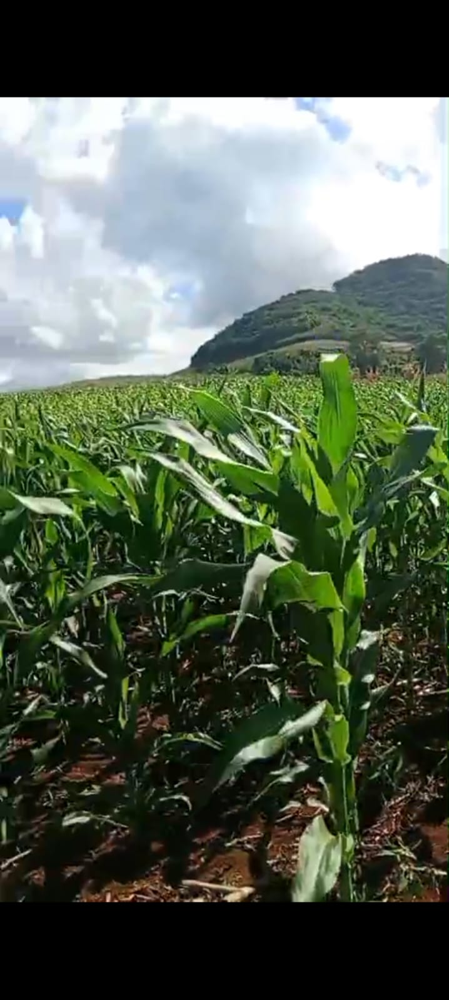
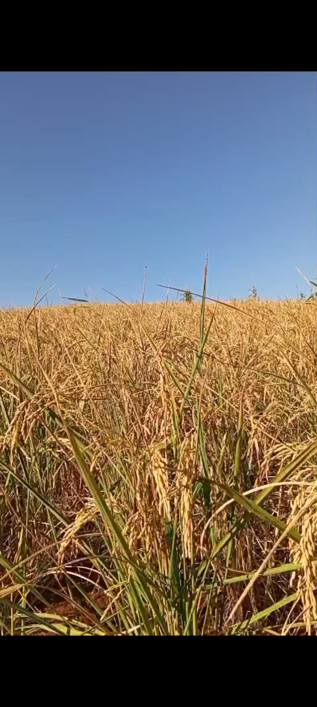
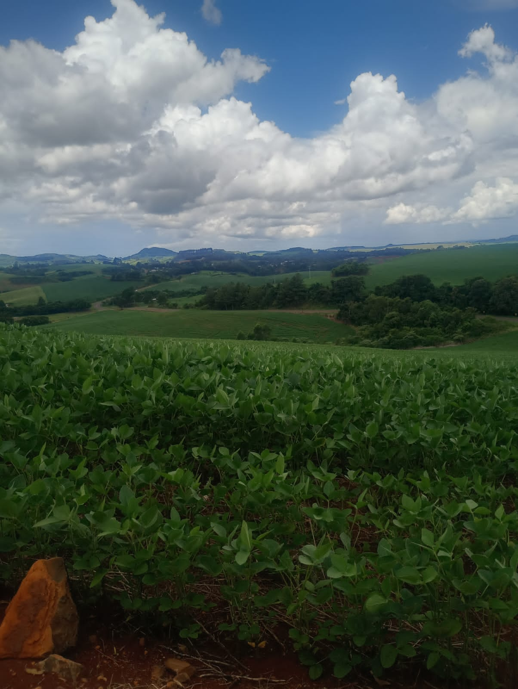

🚜 Agro Forte
Produção
O agronegócio produz alimentos, gera renda e movimenta a economia brasileira.
Tecnologia
Drones, sensores e inteligência artificial tornam a produção mais eficiente.
Desenvolvimento
O campo gera empregos e fortalece comunidades rurais.
Benefícios para a Sociedade
🍎 Segurança Alimentar
Produção suficiente e de qualidade para abastecer a população.
💼 Geração de Empregos
O agronegócio movimenta a economia e cria oportunidades.
🌍 Preservação Ambiental
Práticas sustentáveis reduzem impactos negativos.
🌱 Sustentabilidade no Campo
A sustentabilidade é essencial para garantir que as futuras gerações tenham acesso aos recursos naturais necessários para a produção de alimentos e para a manutenção da vida no planeta. No meio rural, práticas sustentáveis contribuem para aumentar a produtividade sem causar danos ao meio ambiente.
Drones no Campo
Auxiliam no monitoramento das lavouras, identificando pragas, falhas no plantio e áreas que necessitam de maior atenção.
Irrigação Inteligente
Sistemas automatizados reduzem o desperdício de água e garantem maior eficiência na produção agrícola.
Energia Renovável
Painéis solares e biodigestores ajudam a tornar as propriedades rurais mais sustentáveis e econômicas.
🌍 Por que a sustentabilidade é importante?
Saiba mais sobre sustentabilidade📸 Galeria



🎥 Sustentabilidade na prática
📚 Fontes Confiáveis
Fontes confiáveisEMBRAPA
Empresa responsável pelo desenvolvimento de pesquisas e tecnologias que promovem uma agricultura mais produtiva e sustentável.
Visitar site →Sistema FAEP/SENAR-PR
Instituição parceira do Programa Agrinho que promove educação, capacitação e desenvolvimento sustentável no meio rural.
Visitar site →Ministério da Agricultura
Órgão responsável pelas políticas públicas voltadas ao agronegócio, segurança alimentar e sustentabilidade.
Visitar site →ONU – Objetivos de Desenvolvimento Sustentável
Apresenta metas globais para promover um futuro mais justo, sustentável e equilibrado.
Visitar site →Programa Agrinho
Projeto educacional que incentiva práticas de cidadania, inovação e responsabilidade socioambiental.
Visitar site →IBGE
Disponibiliza dados estatísticos importantes sobre agricultura, população e desenvolvimento no Brasil.
Visitar site →